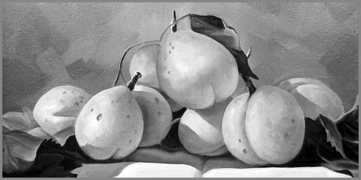

26. Ծիրանի Կորիզի Ճիչը
 |
Ժամանակակից մարդը բախվում է էկզիստենցիալ մի հակասության, երբ մի կողմից գործում են թվային տեխնոլոգիաների աննախադեպ հնարավորությունները, մյուս կողմից գնալով աճող մի զգացում կա, որ իրականը տեղի է տալիս վիրտուալին, իսկ իսկականը՝ նմանակմանը: Այս հակասության հանդեպ գիտակցված վերաբերմունքը դարձել է ժամանակակից մարդու գոյապահպանական հարց:
Կյանքի իմաստը հաճախ թաքնված է ոչ թե մեծ, թանձրահունչ ճշմարտությունների, այլ պարզ, իրական պահերի մեջ։ Այն բացահայտվում է ոչ թե ընտրողական, այլ անմիջական փորձի միջոցով, երբ մեր գիտակցությունը հանդիպում է աշխարհի հետ առանց միջնորդների, առանց սիմուլյակրերի, առանց թվային կամ գաղափարական շերտերի:
Սա մի փոքրիկ ուսումնասիրություն է իրականության, ինքնության և նյութական աշխարհի հետ մեր կապի մասին: Այն հիմնված է այն գաղափարի վրա, որ իսկական գիտելիքը և իմաստը ծնվում են անմիջական փորձից, այլ ոչ թե վերացական հասկացություններից կամ թվային նմանակումներից:
Այս հետազոտությունը չի հանդիսանում տեխնոլոգիաների մերժման մանիֆեստ։ Ընդհակառակը, այն ճանաչում է ժամանակակից տեխնոլոգիաները որպես մեր գոյության անբաժանելի մաս։ Սակայն այն պնդում է, որ տեխնոլոգիական առաջընթացը պետք է հավասարակշռվի էքզիստենցիալ խստությամբ՝ իրականը վիրտուալից տարբերակելու կարողությամբ։
«Ծիրանի կորիզի ճիչը» խորհրդանիշ է այն անսպասելի պահերի, երբ իրականությունը պոռթկում է իր բոլոր գույներով, առանց ֆիլտրերի, առանց խաբեության: «Իրական կյանքի համը» այն է, ինչ մնում է լեզվին, երբ բոլոր պլաստիկ պատրանքները և նմանակումները քայքայվում են:
Մեր ուղին կանցնի փիլիսոփայության, հոգեբանության, տեխնոլոգիայի և արվեստի դաշտերով։ Մենք կդիտարկենք գիտակցության նյարդաբանությունը և թվային մշակույթի ֆենոմենը, կծանոթանանք մարդկանց պատմությունների, ովքեր գտել են իրականի և վիրտուալի միջև հավասարակշռություն։
Այս ամենի վերջնական նպատակը ոչ թե պատրաստի պատասխաններ տալն է, այլ ընթերցողի մոտ այնպիսի հարցերի առաջացումն է, որոնք նրան կտանեն իր սեփական «ծիրանի կորիզի» մոտ։ Որովհետև իմաստը գտնվում է ոչ թե պատասխաններում, այլ հարցադրման գործընթացներում։
Իրական կյանքի «համը» զգալի է դառնում միայն այն պահին, երբ մենք համարձակվում ենք «կծել» այն։
Իրականության խորտակումը սիմուլյակրերի օվկիանոսում
Մենք ապրում ենք մի ժամանակաշրջանում, երբ իրականությունն այլևս տրված չէ, այն ընտրության առարկա է դարձել։ Մեր առջև ընկած է իրականությունների մենյու, և մենք անընդհատ նախընտրում ենք ավելի հարմար, ավելի գունավոր, ավելի հաճելի տարբերակները։ Սոցիալական ցանցերի ժպիտները, ճամփորդական բլոգերների անվերջ ամառը, նյութական հաջողության պլաստիկ պատկերները՝ այս ամենը միասին հյուսում են մի հզոր սիմուլյակր, որն օրեցօր խորտակում է մեր կենսական փորձի իրականությունը։
Մենք գնում ենք նույն սրճարանները, որոնք տեսել ենք ինստագրամում, լուսանկարվում նույն կեցվածքով, ինչ հայտնի բլոգերները, և սպասում ենք նույն հաճույքին, որի մասին կարդացել ենք։ Բայց հաճախ ստանում ենք միայն դատարկություն, քանի որ փորձում ենք վերապրել մեկ այլ մարդու զգացողությունները, այլ ոչ թե ստեղծել մեր սեփականը։ Այստեղ է թաքնված սիմուլյակրի ամբողջ էությունը՝ այն առաջարկում է մեզ զգացմունքների և փորձի պատրաստի կաղապարներ, որոնք երբեք բացարձակ հուսալի չեն, քանի որ դրանք մերը չեն։
Արդյունքում, մեր ինքնությունը նույնպես սկսում է բաժանվել։ Մենք ապրում ենք կրկնակի կյանք՝ մեկը էկրանի վրա, մյուսը էկրանի ետևում։ Եվ աստիճանաբար այս երկու իրականությունները խառնվում են, և մենք այլևս չենք հիշում, թե ով ենք մենք իրականում, և թե ինչ ենք մենք իրականում ուզում:
Սա իրականության խորտակումն է սիմուլյակրերի օվկիանոսում՝ երբ մենք կորցնում ենք կապը մեր ներաշխարհի հետ և սկսում ենք ապրել կյանք, որն ապրում են մեր էկրանների հերոսները։
Թվային մշակույթի ֆենոմենը
Թվային մշակույթը այլևս պարզապես գործիքների համախումբ չէ։ Այն դարձել է մեր սոցիալական էությունը, մեր հաղորդակցության, նույնիսկ՝ մեր ցանկությունների լեզուն։ Այն ձևավորում է մեր աշխարհայացքը՝ սկսած նրանից, թե ինչպես ենք ընտրում սուրճը, մինչև այն, թե ինչպես ենք ընկալում արդարությունը։ Այս մշակույթի հիմքում ընկած է ակնթարթայնության և հասանելիության պարադոքսը՝ մենք կարող ենք ակնթարթորեն կապվել աշխարհի որևէ կետի հետ, բայց հաճախ այդ կապը մակերեսային է և զուրկ է խորությունից։ Մեր փոխազդեցությունները վերածվել են տվյալների հոսքի՝ հաղորդագրություններ, լայքեր, ռեակցիաներ, որոնք հսկվում և վերլուծվում են ալգորիթմների կողմից։ Այս ալգորիթմները, խոստանալով մեզ ավելի անհատականացված փորձ, իրականում ստեղծում են անտեսանելի ֆիլտրերի տրցակներ, որտեղից դժվար է դուրս թափանցել։ Մենք սկսում ենք տեսնել միայն այն, ինչ ալգորիթմները որոշել են, որ մեզ դուր կգա, և աստիճանաբար կորցնում ենք իրականության բազմագունությունը, նրա անսպասելիությունն ու հակասականությունը։
Այս մշակույթը ծնում է նոր տիպի միայնություն՝ միայնություն հիպերկապվածության մեջ։ Մենք շրջապատված ենք հազարավոր վիրտուալ կապերով, բայց հաճախ բացակայում է մեկ իսկականը, որի հետ կարող ենք լռել առանց անհարմարության կամ կիսվել մեր ամենխորը մտքերով առանց դատապարտվելու վախի։
Թվային մշակույթը մեզ տալիս է ամբողջ աշխարհի քարտեզը, բայց խլում է մեր զգացողությունը՝ դրանով կողմնորոշվելու համար:
Անմիջական փորձի կարևորությունը
Նա կանգնած էր խոհանոցում՝ իր սովորական թագավորությունում, որտեղ ժամանակը ծորալով հոսում էր բաղադրիչների հանդեպ նվիրվածությամբ։ Օդը հագեցած սթեյքի տաք գոլորշիով, անուշությամբ խառնվում էր գարնիր բրոկոլիի թեթև դառնությանը։ Սակայն իրական հմայքը՝ արարողության գաղտնիքը, թաքնված էր հաջորդ քայլում։ Նա վերցրեց թավան, դրեց կրակին, լավ տաքացրեց՝ որից սերուցքային կարագը հալվում էր դրա մակերեսին ոսկե հեղուկի նման: Հետո նա վարժ շարժումներով այդ բուրումնավետ հեղուկի մեջ նետեց դանակի հարվածով ջարդած ծիրանի կորիզներ ու սխտորի պճեղներ։
Կրակի վրա մի պահ բոց բռնկվեց, որն օդը պատռեց մի աննկարագրելի բույրով։ Դա ոչ միայն հոտ էր, դա զուտ էության արտահայտում էր՝ հողի հիշողություն, արևի տապ, ծիրանի քաղցր ու դառը էությունը, սխտորի կծվությունը՝ միահյուսված յուղի հարուստ բուրմունքով։ Այդ բույրը նյութական էր, շոշափելի, որը կարելի էր զգալ մաշկով։ Նրա ընկերը, որ լռելյայն դիտում էր այդ ալքիմիան, մեծ կասկածանքով դիտարկում էր թավայում հալված յուղի մեջ թավալվող փշրված կորիզների ու ճզմված սխտորի պճեղների թրթիռը, որոնք իրենց մեջ պարունակում էին ամառվա բույրը։
Իսկ երբ կիսախաշ բրոկոլին միավորվեց այդ ոսկե էլիքսիրի հետ, մի անկրկնելի բան տեղի ունեցավ։ Նա պատառաքաղով վերցրեց մի կտոր, որի վրա փայլում էին յուղոտ սխտորի կտորներ և ծիրանի կորիզի փշուրներ, ու մատուցեց կասկածամիտ ընկերոջը։ Վերջինս հոտոտելով դրա անուշաբույրը համտեսեց այն, որից նրա աչքերը լայն բացվեցին։ Քարացավ տեղում։ Ժամանակը կանգ առավ։ Այնուհետև, կոկորդից բխեց մի ճիչ, որը հնչեց որպես ազատագրման կիսատ աղաղակ, կիսատ աղերսանք։ Դա վախ չէր, այլ էքզիստենցիալ զարմանք՝ մարմնի անմիջական, անկեղծ արձագանքը մի ճշմարտության, որ թաքնված էր համի մեջ։
Դա եղավ նրա «ծիրանի կորիզի ճիչը»։ Ճիչ, որն առաջացավ ոչ թե ցավից, այլ զուտ գոյությունից։ Համի պայթյունը, որն անցավ դեպի նյարդային համակարգ, հասավ մինչև գիտակցության ամենախորը շերտեր, և ստիպեց մարմնին արձագանքել մի պարզ, նախնական ձևով։ Դա մի պահ էր, երբ բոլոր կեղծումները, բոլոր ֆիլտրերն անտեսված էին: Հետևաբար միայն մնաց զուտ սենսացիան ու դրա հանդեպ ունեցած մաքուր, անմիջական հաճույքը, որ ծնվեց ոչ թե մարմնի, այլ հոգու խորքից՝ համի միջով։ Դա իրական կյանքի համն էր՝ անկեղծ, անմիջական և անկրկնելի։
Այս պահի էությունը, երբ մեր զգայարաններն անմիջականորեն դիմավորում են աշխարհին, հակադրվում է մեր կյանքի մեծ մասը զբաղեցնող միջնորդավորված փորձին։ Թվային էկրանները, սոցիալական ցանցերի ֆիլտրները, տեղեկատվության մշակված հոսքը ստեղծում են իրականության մի նրբին, բայց ամուր սիմուլյակր, որտեղ համը, հոտը և տաքությունը կորցնում են իրենց նախնական ուժն ու հզորությունը:
Հենց այս անմիջականության պակասն է հանգեցնում իրականության խորտակմանը սիմուլյակրերի օվկիանոսում: Մեր նյարդային համակարգը թվային դարաշրջանում վերափոխվում է՝ կարճ ազդակներն ընկալելու համար, կտրելով մեզ երկարատև, խորը սենսացիաներից... Մինչդեռ արվեստը հաճախ դառնում է իրականի վերապրման կայուն մեխանիզմ:
Իրականը ճչում է զգայարանների լեզվով։ Խնդիրն այն է, որ մենք մոռանում ենք այդ լեզուն։
Ինքնության հաստատումը իրական աշխարհում
Վիրտուալ տիեզերքում մեր ինքնությունը հաճախ դառնում է նախագիծ՝ մի շարք կառավարելի և խմբագրելի տարրերի ամբողջություն։ Մենք կարող ենք ընտրել, թե ով ենք ուզում երևալ, խմբագրել մեր անցյալը և ներկայացնել իդեալականացված ապագա։ Սակայն այս պրակտիկան մեզ հեռացնում է մեր իսկական էությունից՝ ստեղծելով ներքին բացատ և ինքնագիտակցության խեղաթյուրում։
Ինքնության հաստատումը իրական աշխարհում պահանջում է խորը և հաճախ անհարմար հարցերի ուղղում դեպի ինքդ քեզ՝ «ո՞վ եմ ես, երբ ոչ ոք չի նայում»։ Պատասխանը թաքնված է ոչ թե մեր թվային պրոֆիլների հավաքածույում, այլ մեր գործողություններում, մեր ընտրություններում և նյութական աշխարհի հետ մեր փոխազդեցություններում։
Այն պահին, երբ մենք դադարում ենք նախագծել մեր ինքնությունը և սկսում ենք այն ապրել՝ ընդունելով դրա թերություններն ու հակասությունները, մենք գտնում ենք ներքին կայունություն, որն անհասանելի է ցանկացած թվային հաստատման համար։ Ինքնությունը դադարում է լինել պատկեր և դառնում է գործընթաց՝ անընդհատ ստեղծագործում և վերաստեղծագործում իրական փորձի միջոցով։
Ինքնությունը չի կառուցվում լայքերի հավաքածույով։ Այն կառուցվում է այն պահերի հիշողությամբ, երբ մենք մոռանում ենք, թե ով ենք ուզում երևալ, և պարզապես լինում ենք:
Նորագույն մոտեցում տեխնոլոգիաներին՝ իրականությանն ընդառաջ
Տեխնոլոգիաները մեզանից ոչ թե հրաժարում են պահանջում, այլ նոր՝ գիտակից վերաբերմունք։ Դարաշրջանը, երբ տեխնիկան դիտվում էր որպես բացարձակ բարիք կամ բացարձակ չարիք, ավարտվում է։ Ժամանակն է դիտարկել այն որպես գործիք, որը հաստատել է արդեն իր գոյության իրավունքը մեր կամքից և արժեքներից անկախ։
Նորագույն մոտեցումը հիմնվում է հետևյալ սկզբունքների վրա
Տեխնոլոգիական հիգիենա: Սա մեր թվային կյանքի անհատական էկոլոգիայի ստեղծումն է։ Մենք պետք է պարզենք, թե ինչն է մեզ սնուցում, ինչն է սնում։ Անհրաժեշտ է սահմանենլ ժամանակ և տարածություն՝ թվային աշխարհից անջատված լինելու համար, որպեսզի վերականգնենք մեր զգայարանների մաքրությունը։ Այսպիսի անջատումը դառնում է նոր շքեղություն։
Տեխնոլոգիայի նպատակային օգտագործում: Տեխնոլոգիաները պետք է ծառայեն մեր խորը նպատակներին՝ ստեղծագործելու, կապվելու, սովորելու, այլ ոչ թե մեզ ծառայեցնեն դրանց նկատառումներով։ Այն պետք է լինի մեր ձեռքին գործիք, այլ ոչ թե մեր գիտակցության մեջ տիրակալ։
Մարդկայինը տեխնոլոգիայի կենտրոնում դնելը: Ամեն նոր հավելված, սարք կամ հարթակ պետք է գնահատվի միայն մեկ չափանիշով՝ արդյոք այն խթանում է մարդկային կապը, խորացնում է փորձը, թե միայն սիմուլյացնում է այն: Տեխնոլոգիան պետք է մեզ վերադարձնի իրականություն, այլ ոչ թե հեռացնի դրանից։
Լավագույն տեխնոլոգիան այն է, որն օգնում է մեզ մոռանալ իր գոյության մասին և ամբողջությամբ ներկայանալ մեր կյանքում:
Նյարդային համակարգը թվային դարաշրջանում
Մեր ուղեղը, հազարավոր տարիների էվոլյուցիայի արդյունք լինելով, հանդիպել է մի միջավայրի, որի համար բոլորովին պատրաստ չէր։ Թվային աշխարհի արագընթաց գերդրդրմանը հակված տեղեկատվական հոսքը մեր նյարդային համակարգի համար նման է մշտական ճնշման։
Մեր ուշադրությունը դարձել է գլխավոր արժույթներից մեկը, և այն գտնվում է անընդհատ հարձակման տակ։ Ալգորիթմները, որոնք նախագծված են առավելագույնի հասցնելու մեր էկրանի վրա անցկացրած ժամանակը, շահարկում են դոպամինի ազատման բնական մեխանիզմները։ Ամեն նոր լայք, ամեն նոր ծանուցում ստեղծում է փոքր նյարդային ազդակ, որը մեզ սովորեցնում է փնտրել հաճույքի հաջորդ միկրո-դոզան։ Արդյունքում, մեր ուղեղը վերափոխվում է: այն գործում է կարճ ազդակներն ընկալելու համար, ինչը խլում է մեզնից համբերությունը և կենտրոնացման ունակությունը խորը, երկարատև գործընթացների համար, որոնք անհրաժեշտ են իսկական վարպետության կամ խորը հարաբերությունների համար։
Մենք ձեռք ենք բերում մասնակի ուշադրության սինդրոմ՝ ֆիզիկապես մեկ տեղ, մտքով մեկ այլ տեղ լինելով։ Այս մշտական բաժանվածությունը ստեղծում է ներքին լարվածություն և հոգնածություն, նույնիսկ երբ արտաքինից ոչինչ չենք անում։ Մեր նյարդային համակարգը գտնվում է մշտական կռվի կամ փախուստի ռեժիմում, առանց իրական վտանգի, ինչը հանգեցնում է քրոնիկ սթրեսի և անհանգստության։
Մեր նյարդային համակարգի համար թվային աշխարհի ամենամեծ դժվարությունը ոչ թե տեղեկության առատությունն է, այլ հանգստի և մեկ առարկայի վրա կենտրոնանալու բացարձակ անհնարինությունը:
Արվեստը որպես իրականի վերապրման մեխանիզմ
Երբ բառերը և տրամաբանությունը անզոր են, արվեստը դառնում է իրականության հետ անմիջական և զգայական շփման լավագույն միջոցը։ Այն չի բացատրում աշխարհը, այլ թույլ է տալիս որ զգանք այն։ Թվային սիմուլյակրերի տիեզերքում, որտեղ ամեն ինչ մշակված և միջնորդավորված է, արվեստը դառնում է անմիջականության վերջին ապաստանը։
Նկարիչը, ով կտավի վրա քսում է գույնը, քանդակագործը, ով շոշափում է կավը, կոմպոզիտորը, ով ստեղծում է ձայնի տատանումներ, գործ ունեն նյութի, ֆիզիկական աշխարհի հետ՝ իր անկանխատեսելիությամբ։ Ստեղծագործության գործընթացն ինքնին հակադրվում է թվային կատարելությանը: Այն լի է պատահականությամբ, սխալներով, որոնք հաճախ դառնում են գլխավոր գեղեցկությունը։ Այստեղ ծիրանի կորիզը չի փոխարինվում իր թվային նմանակով, այլ ճչում է իր ամբողջ բնականությամբ։
Արվեստի գործը դիտելիս կամ լսելիս մենք նույնպես դիմում ենք անմիջական զգայարաններին։ Այն մեզ ստիպում է դադարեցնել մտածողությունը և սկսել զգալ։ Այն պահանջում է ներկայանալ այստեղ և հիմա, բացվել անսպասելիի համար։ Այդ իմաստով արվեստը հակադեղ է սիմուլյակրների դեմ, քանի որ այն վերականգնում է մեր կապը իրականության հետ՝ ոչ թե բացատրության, այլ զգայության միջոցով։
Արվեստը մեզ հիշեցնում է, որ աշխարհը կարելի է ոչ միայն հասկանալ, այլև զգալ՝ և որ երբեմն զգալը շատ ավելի խորը իմաստ է բացահայտում, քան հասկանալը:
Իրականությունը զգալու մեթոդը
Իրականությունը զգալու գործընթացը պահանջում է ոչ թե նոր գործիքներ, այլ հին, մոռացված հմտությունների վերածնունդ։ Դա գիտակցված պրակտիկա է, որն ուղղված է մեր զգայարանների սրմանը և մտքի՝ ներկա պահին գտնվելու ունակությանը։
Առաջին քայլը՝ դա դեպի իրականությունը դանդաղեցումն է։ Թվային աշխարհի արագությունը մեզ սովորեցնում է արագ արձագանքել, բայց դանդաղությունը թույլ է տալիս ընկալել։ Դա նշանակում է՝ միաժամանակ մեկ գործողություն կատարել միայն: Զգալ սուրճի բույրը, լսել անձրևի ձայնը, տեսնել լույսի խաղը պատին՝ առանց սոցցանցերը միաժամանակ սքրոլելու։
Երկրորդ քայլը շոշափելի փորձի որոնումն է։ Իրականությունը զգալու համար պետք է ներգրավվել ֆիզիկական աշխարհի հետ՝ հողը ձեռքերում զգալ, հպումը նյութերին, շարժումը տարածության մեջ։ Այս պրակտիկան մեզ վերադարձնում է մեր սեփական մարմնին և նյութական աշխարհին։
Երրորդ քայլը ընդունելությունն է՝ իրականությունը տեսնել այնպիսին, ինչպիսին կա, առանց այն ֆիլտրելու կամ խմբագրելու ցանկության։ Դա ներառում է ընդունել թերությունները, անկատարությունները և անսպասելիությունը, որոնք իրական աշխարհը դարձնում են իսկական։
Չորրորդ քայլը՝ գիտակցված ապրումներն են առօրյայի մեջ։ Իրականությունը փնտրել հեռավորության մեջ կամ հատուկ պրակտիկաներում պետք չէ։ Այն թաքնված է առօրյայի ամենա սովորական պահերում՝ հացի փշրանքների մեջ արևի լույսի ընկնելու, ջրի եռալու ձայնի կամ սենյակում օդի ջերմության մեջ։ Անհրաժեշտ է միայն ուշադիր լինել և այդ պահերը դադարել սպասվածի ու սովորականի նշաններ համարել։
Հինգերորդ քայլը՝ համարձակվել զգալ ամբողջությամբ։ Դա նշանակում է չվախենալ ցավից, դիսկոմֆորտից կամ չափազանց ուժգին էմոցիաներից, որոնք կարող են առաջանալ իրական աշխարհի հետ բախվելիս։ Միայն բացվելով բոլոր զգացողությունների նկատմամբ, առանց դրանք դիվիդենտների բաժանելու՝ «դրական» և «բացասական», մենք կարող ենք զգալ կյանքի ամբողջական համը։
Իրականությունը զգալու ամենակարևոր մեթոդը ոչ թե մեթոդ է, այլ վիճակ է լինել այնտեղ, որտեղ կաս, և լինել այն, ինչ դու կաս, առանց փախուստի և առանց միջնորդների։
Իրական կյանքի համը
Իրական կյանքի համը այն է, ինչ մնում է լեզվին, երբ բոլոր պլաստիկ պատրանքներն ու նմանակումները քայքայվում են։ Դա ոչ թե միայն մի համ է, այլ ամբողջական սենսորական հիշողություն, զգայությունների մի ամբողջ համադրություն, որն առաջանում է, երբ կյանքը զերծ է բոլոր կեղծումներից։
Դա կոնկրետ է, երբեմն կոպիտ, բայց միշտ անկեղծ։ Դա հողի համն է բերքահավաքից հետո, անձրևից հետո օդի թարմությունը, սիրո դառնաքաղցր ճաշակումը, ցավի մետաղական համը կամ հաղթանակի քաղցրությունը։ Դրան հակադրվում է թվային աշխարհի միապաղաղ, մշակված «համը», որն առաջարկում է մշտական քաղցրություն առանց դառնության, հաճույք առանց ռիսկի, փորձառություն առանց հետևանքների։
Իրական կյանքի համը հիշեցնում է, որ կյանքը փխրուն է, անկանխատեսելի և դրա համար թանկ։ Այն ստիպում է մեզ դադարել վերահսկել ամեն ինչ և սովորել ընդունել աշխարհը նրա ողջ բազմազանությամբ՝ գեղեցիկ և տհաճ, հաճելի և ցավալի։
Իրական կյանքի համը միշտ մնում է լեզվին։ Նույնիսկ երբ դուք կուլ եք տալիս այն, նրա էությունը մնում է ձեզ հետ՝ որպես հիշողություն, որը հարություն է տալիս զգայարաններին և հիշեցնում, որ դուք կենդանի եք:
Ծիրանի կորիզի անլռելի ճիչը որպես վերջաբան
Իրականությունը միշտ կճչա։ Նրա ձայնը չի խլանա ոչ մի թվային աղմուկի մեջ, որովհետև այն կյանքի ուրույն ձայնն է՝ անկեղծ, անօգնական կամ հզոր։ Մենք չենք կարող վերադառնալ տեխնոլոգիայից առաջ եղած դարաշրջան, բայց կարող ենք ընտրել, թե ինչպես ենք ապրելու դրա հետ։
Այս ուղին սկսվում է ոչ թե էկրանից, այլ ինքնաճանաչողությունից՝ այն պահից, երբ մենք համարձակվում ենք հարցնել ինքներս մեզ, թե «ի՞նչ եմ ես զգում հենց հիմա։ Ի՞նչ է ասում ինձ աշխարհը առանց ֆիլտրերի, առանց մեկնաբանությունների»։
«Ծիրանի կորիզի ճիչը» մեր ներսում է։ Դա մեր գոյության անմիջական արձագանքն է աշխարհին։ Դա այն պահն է, երբ մենք դադարում ենք փնտրել կյանքի իմաստը բարդ տեսություններում և սկսում ենք այն զգալ պարզությամբ՝ համի, հոտի կամ շոշափելու միջոցով։
Թող յուրաքանչյուր ընթերցող գտնի իր «Ծիրանի կորիզը»՝ իրականության այն անկեղծ և անսպասելի դրսևորումը, որն անձամբ իրեն կստիպի ճչալ զարմանքից կամ լռել հարգանքից, որովհետև իմաստը գտնվում է ոչ թե պատասխաններում, այլ հարցադրման գործընթացում։
Իրականը միշտ ճչում է։ Նույնիսկ երբ աշխարհը չի լսում:
«Մենք կառուցում ենք կամուրջներ այնտեղ, ուր մյուսները տեսնում են միայն անդունդներ։»
© 2026 Մոնումենտալ Կամուրջ: Այս կայքի բովանդակությամբ կարող եք ազատորեն կիսվել համացանցում՝ հղում տալով սկզբնաղբյուրին: Տպելու, տպագրելու կամ գիրք կազմելու միջոցով, կամ այլ ֆիզիկական ձևով և որևէ տեխնոլոգիական կրիչով տարածելը առանց հեղինակի գրավոր համաձայնության արգելվում է: Գիտական, կրթական կամ ստեղծագործական աշխատանքներում մեջբերումները թույլատրելի են պայմանով, որ պարտադիր պետք է նշվի կոնկրետ էջի ամբողջական հասցեն (URL) և աշխատության վերնագիրը: Առանց հեղինակի գրավոր համաձայնության՝ արգելվում է նաև կայքի նյութերի թարգմանությունը որևէ լեզվով և դրանց տարածումը այլ լեզուներով: